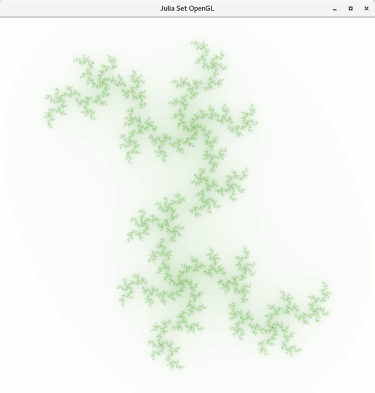
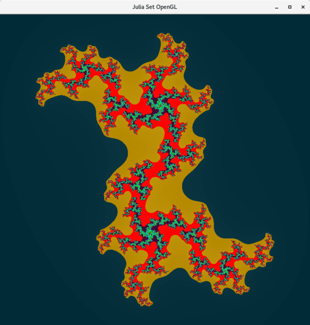
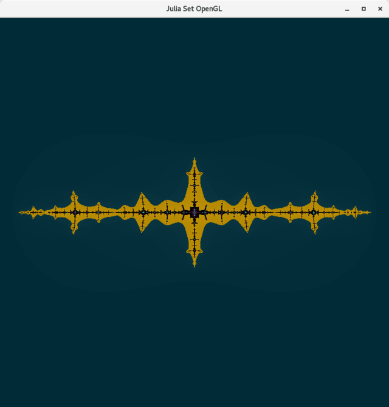
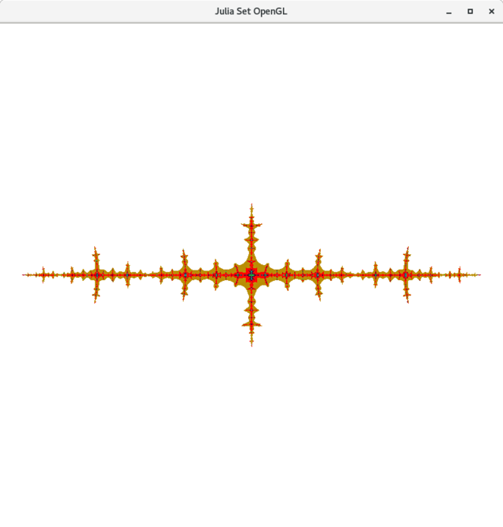
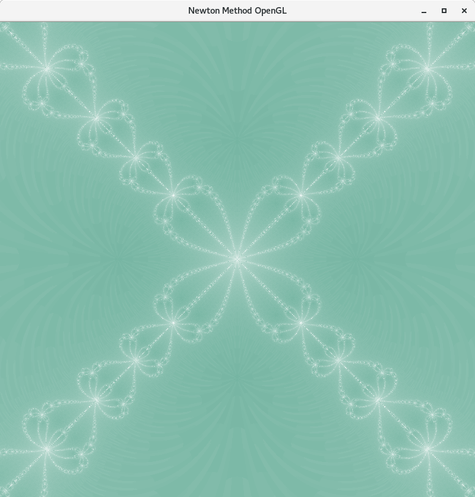

<!DOCTYPE html>
<html><title>icebowl projects</title>
<head>
<meta name="viewport" content="width=device-width, initial-scale=1">
    <link rel="stylesheet" href="../css/style.css">
<style>
body {margin:0;}


.navbar {
  overflow: hidden;
  background-color: #333;
  position: fixed;
  top: 0;
  width: 100%;
}

.navbar a {
  float: left;
  display: block;
  color: #f2f2f2;
  text-align: center;
  padding: 14px 16px;
  text-decoration: none;
  font-size: 17px;
}

.navbar a:hover {
  background: #ddd;
  color: black;
}
.thecode{
	background-color: #fff;
	padding: 20px;
}
.main {
  padding: 16px;
  margin-top: 30px;
  height: 1500px; /* Used in this example to enable scrolling */
}
</style>
</head>
<body>

<div class="navbar">
	<a href="#opengl">OPENGL</a>
   <a href="#gentoo-amd">Gentoo AMD</a>
  <a href="#i7">ASUS ROG IV I7</a>
</div>

<div class="main">
<div id="opengl">
<pre>


<hr />
OpenGL <a href = "https://www.opengl.org/"> https://www.opengl.org/ </a>
I started using OpenGL this year using C++/C under Linux on Gentoo and Debian distrobutions.
I feel using grapbics is an excellent way to teach components of Object Oriented Programming.
I just started using OpenGL this Winter and feel I've just got started.  There is a lot to learn.
Using OpenGL as part of an introducton to C++ during the 2019 school year was a marginal success.
Only a few students worked on really designing a grapbic.
My simple OpenGL code snippets are locate at: <a href="https://github.com/icebowl/openGL">https://github.com/icebowl/openGL</a>
I'd like to point out the Julia Set algorithms.  At this point data inputs are accomplished using command line arguments.
This snippet <a href = "https://raw.githubusercontent.com/icebowl/openGL/master/Julia_128_custom.cpp"> Julia_128_custom.cpp</a>
used the following inputs for the equation f(z) = z^2 +c where z and c imaginary numbers:
"c1_arg" and "c2_arg" are inputs for the c+ci term.
c1_arg = stof(argv[1]);
c2_arg = stof(argv[2]);
colors_arg = stoi(argv[3]);
scale_arg = stof(argv[4]);
limit_arg = stoi(argv[5]);
"colors_args" is used to set colors using a multidimential array.
"scale_arg" is used to set the x+yi plotting scale.
"limit_arg" is a determining value to determine when a point will be ploted.
I've inluded a few graphic examples below.
These graphics were scaled using https://imagemagick.org/script/mogrify.php
mogrify -resize 640x *.png
 <br />
 <br />
 <br />
 <br />
<div class="thecode">
To install OpenGL on Debian install the following packages.
#apt install gcc g++
#apt install libglfw3 libglfw3-dev
#apt install freeglut3 freeglut3-dev
Check out where files are located.
ls /usr/include/ | grep GL
ls /usr/include/GL/
</div>
Now for Newton's Method of Approximating Imaginary Roots.  
These are the base equations.

I wrote some Java code
back in the 1990 to plot the Newton's Method.  I did this on using on a Mac using Tiger.

New graphics.


I've rewitten custom imaginary functions to perform simple imaginary computations and comparisons.
Currently this is my base code.  I am working on refining the gradiant scale from one color to another.
<div class="thecode">

//  g++ Newton_abi.cpp -lglut -lGL -o nm.o
// cw coleman 190608
// ./nm.o 31 400 13
#include <stdio.h>
#include "GL/glut.h"
#include "GL/gl.h"
#include <iostream>
#include <array>
using namespace std; // c++ namespace
struct ABi {
   double a;
   double bi;
};

//globals for command line input
int colors_arg;
int limit_arg;
float scale_arg;

// a+bi
/* print_a: print a struct passed by value (copied) */
void printABi(ABi abi) {
  double x = abi.a;
  double yi = abi.bi;
   //cout <<"* * * print a+bi -> "<< x<<" + "<<yi<<" i "<<endl;
}

ABi abiPower (ABi abi,double coef, double term, int root){
  ABi abiReturn;
  double a = abi.a;
  double bi = abi.bi;
  double x,yi,xt, yti;
  int n;
  // a+bi and x+yi loop for products
  x=a; yi = bi;
  for (n = 1; n < root; n++){
    xt = (x*a)-(yi*bi);
    yti = (a*yi)+(x*bi);
    x = xt; yi = yti;
  }
  x = coef*x + term;
  yi = coef*yi;
//   cout<<" abiPower "<<endl;
//  cout << " x " << x << " yi "<< yi <<endl;
  abiReturn.a = x;
  abiReturn.bi = yi;
//  printABi(abiReturn);
  return abiReturn;
}

ABi abiDivide (ABi n, ABi d){
  ABi quo;
  double a = n.a;
  double bi = n.bi;
  double x = d.a;
  double yi = d.bi;
  double hn,kni ,kd,q,qi;
  // numberator
//  cout<<" @ @ @ "<<endl;
 // printABi(n);
//  printABi(d);
  hn = (a*x + bi * yi);
  kni = (-1*a*yi + x * bi) ;
  //denominator
  kd = (x*x)+(yi*yi);
  //divide
  q = hn / kd;  qi = kni / kd;
  quo.a = q; quo.bi = qi;
//  cout<<" ~ ~ ~ "<<endl;
  //printABi(quo);
  return quo;
}

ABi abiAdd (ABi xn1, ABi xn){
  ABi sum;
  double a = xn.a;
  double bi = xn.bi;
  double x = xn1.a;
  double yi = xn1.bi;
  //subtract
  sum.a = x - a;
  sum.bi = yi - bi;

  return sum;
}

bool abiCompare (ABi xn1, ABi xn){
  ABi sum;
  double a = xn.a;
  double bi = xn.bi;
  double x = xn1.a;
  double yi = xn1.bi;
  int aI,biI,xI,yiI;
  bool compare =  false;
  //cout<<"compare "<<endl;
//  printABi(xn1);
//  printABi(xn);
  int limit = int (limit_arg);
  aI = int(a * limit);
  xI = int(x * limit);
  biI = int(bi * limit);
  yiI = int(yi * limit);

  //cout <<aL<<" "<<xL<<" "<<biL<<" "<<yiL<<endl;
    if ((aI == xI)&&(biI == yiI)){
      compare = true;
  //  cout<<"compare function "<<compare<<endl;
  }
  return compare;
}

///////////////////////

void plot2D(float x,float y, float red, float green, float blue){
    glColor3f(red, green, blue);
    glVertex2f(x, y);
}

array<array<float,3>,128> buildColors(  array<array<float,3>,2> colors, int numberOfColors){
  array<array<float,3>,128>Colors128;
    int n;
    int m=0; // m is the counter
    float sr,sg,sb,er,eg,eb,ir,ig,ib;
    for (n =0;n < 2 ; n++){
      cout<<"colors n="<<n<<" " << colors[n][0]<<" "<<colors[n][1]<<" "<<colors[n][2]<<endl;
    }
    sr = colors[m][0];sg = colors[m][1];sb = colors[m][2];
    er = colors[m+1][0];eg = colors[m+1][1];eb = colors[m+1][2];
    ir = (er-sr)/numberOfColors;ig = (eg-sg)/numberOfColors; ib =(eb-sb)/numberOfColors;
  //  if(ir < 0.0)ir = ir*-1.0; if(ig < 0.0)ig = ig * -1.0; if(ib < 0.0)ib = ib * -1.0;

    //ir = 0.001; ig = 0.001; ib = 0.001;
    cout<<"increments " << ir <<" "<<ig<<" "<<ib<<endl;
    Colors128[m][0] = colors[m][0] ;
    Colors128[m][1] = colors[m][1];
    Colors128[m][2] = colors[m][2];
  m = 1;
    while(m < 128){
            Colors128[m][0] = Colors128[m-1][0] + ir;
              if(Colors128[m][0] < 0.0)Colors128[m][0] = 0.0;
              if(Colors128[m][0] > 1.0)Colors128[m][0] = 1.0;
            Colors128[m][1] = Colors128[m-1][1] + ig;
              if(Colors128[m][1] < 0.0)Colors128[m][1] = 0.0;
              if(Colors128[m][1] > 1.0)Colors128[m][1] = 1.0;
            Colors128[m][2] = Colors128[m-1][2] + ib;
              if(Colors128[m][2] < 0.0)Colors128[m][2] = 0.0;
              if(Colors128[m][2] > 1.0)Colors128[m][2] = 1.0;

              m = m + 1;
          //  cout<<" m = "<<m<<endl;
          //   cout<< Colors128[n+m][0]<<" "<<Colors128[n+m][1]<<" "<<Colors128[n+m][2]<<endl;
    }
for (n =0;n < 129 ; n++){
    //cout<<"n="<<n<<" " << Colors128[n][0]<<" "<<Colors128[n][1]<<" "<<Colors128[n][2]<<endl;
    }

    return Colors128;
}

void drawPoints(){
  // these are the starting colors
        //113,176,159
  array<array<float,3>,2> colors = {{
      {   0.443,0.7 , .624},
      {   1.0,1.0,1.0}
    }};
    int total_colors = colors_arg;
    int setcolor = 0;
    int iterations = 1000;
    int limit = limit_arg;
    float h,k;
    int count,maxcount;
    float x,y,x1,y1,x2,y2,jd,id;
      array<array<float,3>,128>colors128 = buildColors(colors,total_colors);
    // .34567 .5

    float red = 1.0,green = 0 ,blue = 0.0;
    glClearColor(1.0,1.0, 1.0, 1.0);
    glClear(GL_COLOR_BUFFER_BIT);
    glColor3f(1.0, 1.0, 1.0);
    //glOrtho(-1.0, 1.0, -1.0, 1.0, -1.0, 1.0);
    glOrtho(-400.0, 400.0, -400.0, 400.0, -400.0, 400.0);
    glPointSize(1.0);// set pixel size
    glBegin(GL_POINTS);// points
    // ************************************************************
     ABi xyin, xyin1, quo, num, den;
    // * * * *
    bool done = false;
    maxcount = 0;
    float scale = scale_arg/2.0;

    for (k = -400.0 ; k <= 400.0 ; k = k + 1 ){
			y1 = k / scale;
				for (h = -400.0 ; h <= 400.0; h = h + 1){
					x1 =  h / scale;
					//x = x1;
					//y = y1;
          xyin.a = x1;
          xyin.bi = y1;
          //printABi(xyin);
          /////////////////////
          done = false;
            count = 0;
            while(!done){
              num = abiPower(xyin,1.0,-1.0,4);
              den = abiPower(xyin,4.0,0.0,3);
               quo = abiDivide(num,den);
               xyin1 = abiAdd(xyin,quo);
               done = abiCompare(xyin1,xyin);
               xyin = xyin1;
               count++;
             }
            // cout<<" count "<<count<<endl;
            ////////////////
              setcolor = count % total_colors;
      				red = colors128[setcolor][0];
              green= colors128[setcolor][1];
      				blue = colors128[setcolor][2];
      				plot2D(h,k,red,green,blue);
	    	}
        count++;
      }
      //  printf("max count %d \n",maxcount);

      // only change code above this line
    // ************************************************************
    glEnd();//end points
    glutSwapBuffers();// this draws the points
}

int main(int argc, char **argv)
{

    cout<< argv[1]<<endl;
    cout<< argv[2]<<endl;
    cout<< argv[3]<<endl;
    colors_arg = stoi(argv[1]);
    scale_arg = stof(argv[2]);
    limit_arg = stof(argv[3]);
    glutInit(&argc, argv);
    glutInitDisplayMode(GLUT_DOUBLE);
    glutInitWindowSize(800, 800);
    glutInitWindowPosition(100, 100);
    glutCreateWindow("Newton Method OpenGL");
    glutDisplayFunc(drawPoints);
    glutMainLoop();
    return 0;
}

</div>
</pre>
</div>
<!-- end gentoo-amd -->
<div id="gentoo-amd">
<pre>


<hr />
GENTOO - FunBox
$ uname -a
Linux ciclo 4.19.27-gentoo-r1 #10 SMP Fri Apr 19 19:15:13 PDT 2019 x86_64 AMD FX(tm)-8350 Eight-Core Processor AuthenticAMD GNU/Linux
- ASUS ATX DDR3 2133 AMD AM3+ Motherboard M5A97 PLUS
- Mushkin Enhanced Blackline 32GB (4 x 8GB) DDR3 UDIMM 2133 (PC3 17000) 997125F
- AMD FX 8350 (Only 4 Cores)
- Thermaltake Smart Standard 750W 80 PLUS Bronze ATX12V 2.3 Power Supply SP-750P
- VGA compatible controller:
	Advanced Micro Devices, Inc. [AMD/ATI] Oland PRO [Radeon R7 240/340] (rev 87)
OS - Samsung 850 EVO 500GB 2.5-Inch SATA III Internal SSD (MZ-75E500B/AM)
Disk /dev/sda: 465.8 GiB, 500107862016 bytes, 976773168 sectors
Storage
# fdisk -l
Disk /dev/sdb: 1.8 TiB (WD = Western Digital)
Disk /dev/sdc: 931.5 GiB, (WD)
Disk /dev/sde: 1.8 TiB, (WD)
Disk /dev/sdd: 931.5 GiB, (WD)

fstab
/dev/sdb /home ext4 defaults 1 2
/dev/sdc /x ext4 defaults,nodev,noexec 1 2
/dev/sdd /y ext4 defaults,nodev,noexec 1 2
/dev/sde /z ext4 defaults,nodev,noexec 1 2


</pre>
</div>
<!-- end gentoo-amd -->
<div id="i7">
<pre>


<hr />
ASUS ROG Extreme IV - Intel I7
OS - Debian 9.9
$ uname -a
Linux 143 4.9.0-9-amd64 #1 SMP Debian 4.9.168-1+deb9u2 (2019-05-13) x86_64 GNU/Linux

# fdisk -l
/dev/sda: 931.5 GiB,(WD)
Device     Boot      Start        End    Sectors   Size Id Type
/dev/sda1       1891024896 1953523711   62498816  29.8G 82 Linux swap / Solaris
/dev/sda2  *          2048 1891024895 1891022848 901.7G 83 Linux

Disk /dev/sdb: 931.5 GiB,(WD)

cat /proc/cpuinfo
processor	: 0
vendor_id	: GenuineIntel
cpu family	: 6
model		: 45
model name	: Intel(R) Core(TM) i7-3930K CPU @ 3.20GHz
stepping	: 7
microcode	: 0x714
cpu MHz		: 3201.755
cache size	: 12288 KB
physical id	: 0
siblings	: 12
core id		: 0
cpu cores	: 6
apicid		: 0
initial apicid	: 0
fpu		: yes
fpu_exception	: yes
cpuid level	: 13
wp		: yes
flags		: fpu vme de pse tsc msr pae mce cx8 apic sep mtrr pge mca cmov pat pse36 clflush dts acpi mmx fxsr sse sse2 ss ht tm pbe syscall nx pdpe1gb rdtscp lm constant_tsc arch_perfmon pebs bts rep_good nopl xtopology nonstop_tsc aperfmperf pni pclmulqdq dtes64 monitor ds_cpl vmx est tm2 ssse3 cx16 xtpr pdcm pcid dca sse4_1 sse4_2 x2apic popcnt tsc_deadline_timer aes xsave avx lahf_lm epb ssbd ibrs ibpb stibp kaiser tpr_shadow vnmi flexpriority ept vpid xsaveopt dtherm ida arat pln pts flush_l1d
bugs		: cpu_meltdown spectre_v1 spectre_v2 spec_store_bypass l1tf mds
bogomips	: 6403.51
clflush size	: 64
cache_alignment	: 64
address sizes	: 46 bits physical, 48 bits virtual
power management:

processor	: 1
vendor_id	: GenuineIntel
cpu family	: 6
model		: 45
model name	: Intel(R) Core(TM) i7-3930K CPU @ 3.20GHz
stepping	: 7
microcode	: 0x714
cpu MHz		: 3201.755
cache size	: 12288 KB
physical id	: 0
siblings	: 12
core id		: 1
cpu cores	: 6
apicid		: 2
initial apicid	: 2
fpu		: yes
fpu_exception	: yes
cpuid level	: 13
wp		: yes
flags		: fpu vme de pse tsc msr pae mce cx8 apic sep mtrr pge mca cmov pat pse36 clflush dts acpi mmx fxsr sse sse2 ss ht tm pbe syscall nx pdpe1gb rdtscp lm constant_tsc arch_perfmon pebs bts rep_good nopl xtopology nonstop_tsc aperfmperf pni pclmulqdq dtes64 monitor ds_cpl vmx est tm2 ssse3 cx16 xtpr pdcm pcid dca sse4_1 sse4_2 x2apic popcnt tsc_deadline_timer aes xsave avx lahf_lm epb ssbd ibrs ibpb stibp kaiser tpr_shadow vnmi flexpriority ept vpid xsaveopt dtherm ida arat pln pts flush_l1d
bugs		: cpu_meltdown spectre_v1 spectre_v2 spec_store_bypass l1tf mds
bogomips	: 6403.51
clflush size	: 64
cache_alignment	: 64
address sizes	: 46 bits physical, 48 bits virtual
power management:

processor	: 2
vendor_id	: GenuineIntel
cpu family	: 6
model		: 45
model name	: Intel(R) Core(TM) i7-3930K CPU @ 3.20GHz
stepping	: 7
microcode	: 0x714
cpu MHz		: 1375.781
cache size	: 12288 KB
physical id	: 0
siblings	: 12
core id		: 2
cpu cores	: 6
apicid		: 4
initial apicid	: 4
fpu		: yes
fpu_exception	: yes
cpuid level	: 13
wp		: yes
flags		: fpu vme de pse tsc msr pae mce cx8 apic sep mtrr pge mca cmov pat pse36 clflush dts acpi mmx fxsr sse sse2 ss ht tm pbe syscall nx pdpe1gb rdtscp lm constant_tsc arch_perfmon pebs bts rep_good nopl xtopology nonstop_tsc aperfmperf pni pclmulqdq dtes64 monitor ds_cpl vmx est tm2 ssse3 cx16 xtpr pdcm pcid dca sse4_1 sse4_2 x2apic popcnt tsc_deadline_timer aes xsave avx lahf_lm epb ssbd ibrs ibpb stibp kaiser tpr_shadow vnmi flexpriority ept vpid xsaveopt dtherm ida arat pln pts flush_l1d
bugs		: cpu_meltdown spectre_v1 spectre_v2 spec_store_bypass l1tf mds
bogomips	: 6403.51
clflush size	: 64
cache_alignment	: 64
address sizes	: 46 bits physical, 48 bits virtual
power management:

processor	: 3
vendor_id	: GenuineIntel
cpu family	: 6
model		: 45
model name	: Intel(R) Core(TM) i7-3930K CPU @ 3.20GHz
stepping	: 7
microcode	: 0x714
cpu MHz		: 1241.992
cache size	: 12288 KB
physical id	: 0
siblings	: 12
core id		: 3
cpu cores	: 6
apicid		: 6
initial apicid	: 6
fpu		: yes
fpu_exception	: yes
cpuid level	: 13
wp		: yes
flags		: fpu vme de pse tsc msr pae mce cx8 apic sep mtrr pge mca cmov pat pse36 clflush dts acpi mmx fxsr sse sse2 ss ht tm pbe syscall nx pdpe1gb rdtscp lm constant_tsc arch_perfmon pebs bts rep_good nopl xtopology nonstop_tsc aperfmperf pni pclmulqdq dtes64 monitor ds_cpl vmx est tm2 ssse3 cx16 xtpr pdcm pcid dca sse4_1 sse4_2 x2apic popcnt tsc_deadline_timer aes xsave avx lahf_lm epb ssbd ibrs ibpb stibp kaiser tpr_shadow vnmi flexpriority ept vpid xsaveopt dtherm ida arat pln pts flush_l1d
bugs		: cpu_meltdown spectre_v1 spectre_v2 spec_store_bypass l1tf mds
bogomips	: 6403.51
clflush size	: 64
cache_alignment	: 64
address sizes	: 46 bits physical, 48 bits virtual
power management:

processor	: 4
vendor_id	: GenuineIntel
cpu family	: 6
model		: 45
model name	: Intel(R) Core(TM) i7-3930K CPU @ 3.20GHz
stepping	: 7
microcode	: 0x714
cpu MHz		: 1224.609
cache size	: 12288 KB
physical id	: 0
siblings	: 12
core id		: 4
cpu cores	: 6
apicid		: 8
initial apicid	: 8
fpu		: yes
fpu_exception	: yes
cpuid level	: 13
wp		: yes
flags		: fpu vme de pse tsc msr pae mce cx8 apic sep mtrr pge mca cmov pat pse36 clflush dts acpi mmx fxsr sse sse2 ss ht tm pbe syscall nx pdpe1gb rdtscp lm constant_tsc arch_perfmon pebs bts rep_good nopl xtopology nonstop_tsc aperfmperf pni pclmulqdq dtes64 monitor ds_cpl vmx est tm2 ssse3 cx16 xtpr pdcm pcid dca sse4_1 sse4_2 x2apic popcnt tsc_deadline_timer aes xsave avx lahf_lm epb ssbd ibrs ibpb stibp kaiser tpr_shadow vnmi flexpriority ept vpid xsaveopt dtherm ida arat pln pts flush_l1d
bugs		: cpu_meltdown spectre_v1 spectre_v2 spec_store_bypass l1tf mds
bogomips	: 6403.51
clflush size	: 64
cache_alignment	: 64
address sizes	: 46 bits physical, 48 bits virtual
power management:

processor	: 5
vendor_id	: GenuineIntel
cpu family	: 6
model		: 45
model name	: Intel(R) Core(TM) i7-3930K CPU @ 3.20GHz
stepping	: 7
microcode	: 0x714
cpu MHz		: 1200.000
cache size	: 12288 KB
physical id	: 0
siblings	: 12
core id		: 5
cpu cores	: 6
apicid		: 10
initial apicid	: 10
fpu		: yes
fpu_exception	: yes
cpuid level	: 13
wp		: yes
flags		: fpu vme de pse tsc msr pae mce cx8 apic sep mtrr pge mca cmov pat pse36 clflush dts acpi mmx fxsr sse sse2 ss ht tm pbe syscall nx pdpe1gb rdtscp lm constant_tsc arch_perfmon pebs bts rep_good nopl xtopology nonstop_tsc aperfmperf pni pclmulqdq dtes64 monitor ds_cpl vmx est tm2 ssse3 cx16 xtpr pdcm pcid dca sse4_1 sse4_2 x2apic popcnt tsc_deadline_timer aes xsave avx lahf_lm epb ssbd ibrs ibpb stibp kaiser tpr_shadow vnmi flexpriority ept vpid xsaveopt dtherm ida arat pln pts flush_l1d
bugs		: cpu_meltdown spectre_v1 spectre_v2 spec_store_bypass l1tf mds
bogomips	: 6403.51
clflush size	: 64
cache_alignment	: 64
address sizes	: 46 bits physical, 48 bits virtual
power management:

processor	: 6
vendor_id	: GenuineIntel
cpu family	: 6
model		: 45
model name	: Intel(R) Core(TM) i7-3930K CPU @ 3.20GHz
stepping	: 7
microcode	: 0x714
cpu MHz		: 1287.890
cache size	: 12288 KB
physical id	: 0
siblings	: 12
core id		: 0
cpu cores	: 6
apicid		: 1
initial apicid	: 1
fpu		: yes
fpu_exception	: yes
cpuid level	: 13
wp		: yes
flags		: fpu vme de pse tsc msr pae mce cx8 apic sep mtrr pge mca cmov pat pse36 clflush dts acpi mmx fxsr sse sse2 ss ht tm pbe syscall nx pdpe1gb rdtscp lm constant_tsc arch_perfmon pebs bts rep_good nopl xtopology nonstop_tsc aperfmperf pni pclmulqdq dtes64 monitor ds_cpl vmx est tm2 ssse3 cx16 xtpr pdcm pcid dca sse4_1 sse4_2 x2apic popcnt tsc_deadline_timer aes xsave avx lahf_lm epb ssbd ibrs ibpb stibp kaiser tpr_shadow vnmi flexpriority ept vpid xsaveopt dtherm ida arat pln pts flush_l1d
bugs		: cpu_meltdown spectre_v1 spectre_v2 spec_store_bypass l1tf mds
bogomips	: 6403.51
clflush size	: 64
cache_alignment	: 64
address sizes	: 46 bits physical, 48 bits virtual
power management:

processor	: 7
vendor_id	: GenuineIntel
cpu family	: 6
model		: 45
model name	: Intel(R) Core(TM) i7-3930K CPU @ 3.20GHz
stepping	: 7
microcode	: 0x714
cpu MHz		: 1208.984
cache size	: 12288 KB
physical id	: 0
siblings	: 12
core id		: 1
cpu cores	: 6
apicid		: 3
initial apicid	: 3
fpu		: yes
fpu_exception	: yes
cpuid level	: 13
wp		: yes
flags		: fpu vme de pse tsc msr pae mce cx8 apic sep mtrr pge mca cmov pat pse36 clflush dts acpi mmx fxsr sse sse2 ss ht tm pbe syscall nx pdpe1gb rdtscp lm constant_tsc arch_perfmon pebs bts rep_good nopl xtopology nonstop_tsc aperfmperf pni pclmulqdq dtes64 monitor ds_cpl vmx est tm2 ssse3 cx16 xtpr pdcm pcid dca sse4_1 sse4_2 x2apic popcnt tsc_deadline_timer aes xsave avx lahf_lm epb ssbd ibrs ibpb stibp kaiser tpr_shadow vnmi flexpriority ept vpid xsaveopt dtherm ida arat pln pts flush_l1d
bugs		: cpu_meltdown spectre_v1 spectre_v2 spec_store_bypass l1tf mds
bogomips	: 6403.51
clflush size	: 64
cache_alignment	: 64
address sizes	: 46 bits physical, 48 bits virtual
power management:

processor	: 8
vendor_id	: GenuineIntel
cpu family	: 6
model		: 45
model name	: Intel(R) Core(TM) i7-3930K CPU @ 3.20GHz
stepping	: 7
microcode	: 0x714
cpu MHz		: 1366.406
cache size	: 12288 KB
physical id	: 0
siblings	: 12
core id		: 2
cpu cores	: 6
apicid		: 5
initial apicid	: 5
fpu		: yes
fpu_exception	: yes
cpuid level	: 13
wp		: yes
flags		: fpu vme de pse tsc msr pae mce cx8 apic sep mtrr pge mca cmov pat pse36 clflush dts acpi mmx fxsr sse sse2 ss ht tm pbe syscall nx pdpe1gb rdtscp lm constant_tsc arch_perfmon pebs bts rep_good nopl xtopology nonstop_tsc aperfmperf pni pclmulqdq dtes64 monitor ds_cpl vmx est tm2 ssse3 cx16 xtpr pdcm pcid dca sse4_1 sse4_2 x2apic popcnt tsc_deadline_timer aes xsave avx lahf_lm epb ssbd ibrs ibpb stibp kaiser tpr_shadow vnmi flexpriority ept vpid xsaveopt dtherm ida arat pln pts flush_l1d
bugs		: cpu_meltdown spectre_v1 spectre_v2 spec_store_bypass l1tf mds
bogomips	: 6403.51
clflush size	: 64
cache_alignment	: 64
address sizes	: 46 bits physical, 48 bits virtual
power management:

processor	: 9
vendor_id	: GenuineIntel
cpu family	: 6
model		: 45
model name	: Intel(R) Core(TM) i7-3930K CPU @ 3.20GHz
stepping	: 7
microcode	: 0x714
cpu MHz		: 1199.804
cache size	: 12288 KB
physical id	: 0
siblings	: 12
core id		: 3
cpu cores	: 6
apicid		: 7
initial apicid	: 7
fpu		: yes
fpu_exception	: yes
cpuid level	: 13
wp		: yes
flags		: fpu vme de pse tsc msr pae mce cx8 apic sep mtrr pge mca cmov pat pse36 clflush dts acpi mmx fxsr sse sse2 ss ht tm pbe syscall nx pdpe1gb rdtscp lm constant_tsc arch_perfmon pebs bts rep_good nopl xtopology nonstop_tsc aperfmperf pni pclmulqdq dtes64 monitor ds_cpl vmx est tm2 ssse3 cx16 xtpr pdcm pcid dca sse4_1 sse4_2 x2apic popcnt tsc_deadline_timer aes xsave avx lahf_lm epb ssbd ibrs ibpb stibp kaiser tpr_shadow vnmi flexpriority ept vpid xsaveopt dtherm ida arat pln pts flush_l1d
bugs		: cpu_meltdown spectre_v1 spectre_v2 spec_store_bypass l1tf mds
bogomips	: 6403.51
clflush size	: 64
cache_alignment	: 64
address sizes	: 46 bits physical, 48 bits virtual
power management:

processor	: 10
vendor_id	: GenuineIntel
cpu family	: 6
model		: 45
model name	: Intel(R) Core(TM) i7-3930K CPU @ 3.20GHz
stepping	: 7
microcode	: 0x714
cpu MHz		: 1350.390
cache size	: 12288 KB
physical id	: 0
siblings	: 12
core id		: 4
cpu cores	: 6
apicid		: 9
initial apicid	: 9
fpu		: yes
fpu_exception	: yes
cpuid level	: 13
wp		: yes
flags		: fpu vme de pse tsc msr pae mce cx8 apic sep mtrr pge mca cmov pat pse36 clflush dts acpi mmx fxsr sse sse2 ss ht tm pbe syscall nx pdpe1gb rdtscp lm constant_tsc arch_perfmon pebs bts rep_good nopl xtopology nonstop_tsc aperfmperf pni pclmulqdq dtes64 monitor ds_cpl vmx est tm2 ssse3 cx16 xtpr pdcm pcid dca sse4_1 sse4_2 x2apic popcnt tsc_deadline_timer aes xsave avx lahf_lm epb ssbd ibrs ibpb stibp kaiser tpr_shadow vnmi flexpriority ept vpid xsaveopt dtherm ida arat pln pts flush_l1d
bugs		: cpu_meltdown spectre_v1 spectre_v2 spec_store_bypass l1tf mds
bogomips	: 6403.51
clflush size	: 64
cache_alignment	: 64
address sizes	: 46 bits physical, 48 bits virtual
power management:

processor	: 11
vendor_id	: GenuineIntel
cpu family	: 6
model		: 45
model name	: Intel(R) Core(TM) i7-3930K CPU @ 3.20GHz
stepping	: 7
microcode	: 0x714
cpu MHz		: 1398.437
cache size	: 12288 KB
physical id	: 0
siblings	: 12
core id		: 5
cpu cores	: 6
apicid		: 11
initial apicid	: 11
fpu		: yes
fpu_exception	: yes
cpuid level	: 13
wp		: yes
flags		: fpu vme de pse tsc msr pae mce cx8 apic sep mtrr pge mca cmov pat pse36 clflush dts acpi mmx fxsr sse sse2 ss ht tm pbe syscall nx pdpe1gb rdtscp lm constant_tsc arch_perfmon pebs bts rep_good nopl xtopology nonstop_tsc aperfmperf pni pclmulqdq dtes64 monitor ds_cpl vmx est tm2 ssse3 cx16 xtpr pdcm pcid dca sse4_1 sse4_2 x2apic popcnt tsc_deadline_timer aes xsave avx lahf_lm epb ssbd ibrs ibpb stibp kaiser tpr_shadow vnmi flexpriority ept vpid xsaveopt dtherm ida arat pln pts flush_l1d
bugs		: cpu_meltdown spectre_v1 spectre_v2 spec_store_bypass l1tf mds
bogomips	: 6403.51
clflush size	: 64
cache_alignment	: 64
address sizes	: 46 bits physical, 48 bits virtual


lspci:
00:00.0 Host bridge: Intel Corporation Xeon E5/Core i7 DMI2 (rev 07)
00:01.0 PCI bridge: Intel Corporation Xeon E5/Core i7 IIO PCI Express Root Port 1a (rev 07)
00:02.0 PCI bridge: Intel Corporation Xeon E5/Core i7 IIO PCI Express Root Port 2a (rev 07)
00:03.0 PCI bridge: Intel Corporation Xeon E5/Core i7 IIO PCI Express Root Port 3a in PCI Express Mode (rev 07)
00:05.0 System peripheral: Intel Corporation Xeon E5/Core i7 Address Map, VTd_Misc, System Management (rev 07)
00:05.2 System peripheral: Intel Corporation Xeon E5/Core i7 Control Status and Global Errors (rev 07)
00:05.4 PIC: Intel Corporation Xeon E5/Core i7 I/O APIC (rev 07)
00:11.0 PCI bridge: Intel Corporation C600/X79 series chipset PCI Express Virtual Root Port (rev 05)
00:16.0 Communication controller: Intel Corporation C600/X79 series chipset MEI Controller #1 (rev 05)
00:19.0 Ethernet controller: Intel Corporation 82579V Gigabit Network Connection (rev 05)
00:1a.0 USB controller: Intel Corporation C600/X79 series chipset USB2 Enhanced Host Controller #2 (rev 05)
00:1b.0 Audio device: Intel Corporation C600/X79 series chipset High Definition Audio Controller (rev 05)
00:1c.0 PCI bridge: Intel Corporation C600/X79 series chipset PCI Express Root Port 1 (rev b5)
00:1c.1 PCI bridge: Intel Corporation C600/X79 series chipset PCI Express Root Port 2 (rev b5)
00:1c.2 PCI bridge: Intel Corporation C600/X79 series chipset PCI Express Root Port 3 (rev b5)
00:1c.3 PCI bridge: Intel Corporation C600/X79 series chipset PCI Express Root Port 4 (rev b5)
00:1c.4 PCI bridge: Intel Corporation C600/X79 series chipset PCI Express Root Port 5 (rev b5)
00:1c.5 PCI bridge: Intel Corporation C600/X79 series chipset PCI Express Root Port 6 (rev b5)
00:1c.7 PCI bridge: Intel Corporation C600/X79 series chipset PCI Express Root Port 8 (rev b5)
00:1d.0 USB controller: Intel Corporation C600/X79 series chipset USB2 Enhanced Host Controller #1 (rev 05)
00:1e.0 PCI bridge: Intel Corporation 82801 PCI Bridge (rev a5)
00:1f.0 ISA bridge: Intel Corporation C600/X79 series chipset LPC Controller (rev 05)
00:1f.2 SATA controller: Intel Corporation C600/X79 series chipset 6-Port SATA AHCI Controller (rev 05)
00:1f.3 SMBus: Intel Corporation C600/X79 series chipset SMBus Host Controller (rev 05)
03:00.0 VGA compatible controller: Advanced Micro Devices, Inc. [AMD/ATI] Oland PRO [Radeon R7 240/340] (rev 87)
03:00.1 Audio device: Advanced Micro Devices, Inc. [AMD/ATI] Cape Verde/Pitcairn HDMI Audio [Radeon HD 7700/7800 Series]
06:00.0 USB controller: ASMedia Technology Inc. ASM1042 SuperSpeed USB Host Controller
07:00.0 USB controller: ASMedia Technology Inc. ASM1042 SuperSpeed USB Host Controller
08:00.0 USB controller: ASMedia Technology Inc. ASM1042 SuperSpeed USB Host Controller
09:00.0 USB controller: ASMedia Technology Inc. ASM1042 SuperSpeed USB Host Controller
0a:00.0 SATA controller: ASMedia Technology Inc. ASM1062 Serial ATA Controller (rev 01)
0b:00.0 SATA controller: ASMedia Technology Inc. ASM1062 Serial ATA Controller (rev 01)
ff:08.0 System peripheral: Intel Corporation Xeon E5/Core i7 QPI Link 0 (rev 07)
ff:08.3 System peripheral: Intel Corporation Xeon E5/Core i7 QPI Link Reut 0 (rev 07)
ff:08.4 System peripheral: Intel Corporation Xeon E5/Core i7 QPI Link Reut 0 (rev 07)
ff:09.0 System peripheral: Intel Corporation Xeon E5/Core i7 QPI Link 1 (rev 07)
ff:09.3 System peripheral: Intel Corporation Xeon E5/Core i7 QPI Link Reut 1 (rev 07)
ff:09.4 System peripheral: Intel Corporation Xeon E5/Core i7 QPI Link Reut 1 (rev 07)
ff:0a.0 System peripheral: Intel Corporation Xeon E5/Core i7 Power Control Unit 0 (rev 07)
ff:0a.1 System peripheral: Intel Corporation Xeon E5/Core i7 Power Control Unit 1 (rev 07)
ff:0a.2 System peripheral: Intel Corporation Xeon E5/Core i7 Power Control Unit 2 (rev 07)
ff:0a.3 System peripheral: Intel Corporation Xeon E5/Core i7 Power Control Unit 3 (rev 07)
ff:0b.0 System peripheral: Intel Corporation Xeon E5/Core i7 Interrupt Control Registers (rev 07)
ff:0b.3 System peripheral: Intel Corporation Xeon E5/Core i7 Semaphore and Scratchpad Configuration Registers (rev 07)
ff:0c.0 System peripheral: Intel Corporation Xeon E5/Core i7 Unicast Register 0 (rev 07)
ff:0c.1 System peripheral: Intel Corporation Xeon E5/Core i7 Unicast Register 0 (rev 07)
ff:0c.2 System peripheral: Intel Corporation Xeon E5/Core i7 Unicast Register 0 (rev 07)
ff:0c.6 System peripheral: Intel Corporation Xeon E5/Core i7 Integrated Memory Controller System Address Decoder 0 (rev 07)
ff:0c.7 System peripheral: Intel Corporation Xeon E5/Core i7 System Address Decoder (rev 07)
ff:0d.0 System peripheral: Intel Corporation Xeon E5/Core i7 Unicast Register 0 (rev 07)
ff:0d.1 System peripheral: Intel Corporation Xeon E5/Core i7 Unicast Register 0 (rev 07)
ff:0d.2 System peripheral: Intel Corporation Xeon E5/Core i7 Unicast Register 0 (rev 07)
ff:0d.6 System peripheral: Intel Corporation Xeon E5/Core i7 Integrated Memory Controller System Address Decoder 1 (rev 07)
ff:0e.0 System peripheral: Intel Corporation Xeon E5/Core i7 Processor Home Agent (rev 07)
ff:0e.1 Performance counters: Intel Corporation Xeon E5/Core i7 Processor Home Agent Performance Monitoring (rev 07)
ff:0f.0 System peripheral: Intel Corporation Xeon E5/Core i7 Integrated Memory Controller Registers (rev 07)
ff:0f.1 System peripheral: Intel Corporation Xeon E5/Core i7 Integrated Memory Controller RAS Registers (rev 07)
ff:0f.2 System peripheral: Intel Corporation Xeon E5/Core i7 Integrated Memory Controller Target Address Decoder 0 (rev 07)
ff:0f.3 System peripheral: Intel Corporation Xeon E5/Core i7 Integrated Memory Controller Target Address Decoder 1 (rev 07)
ff:0f.4 System peripheral: Intel Corporation Xeon E5/Core i7 Integrated Memory Controller Target Address Decoder 2 (rev 07)
ff:0f.5 System peripheral: Intel Corporation Xeon E5/Core i7 Integrated Memory Controller Target Address Decoder 3 (rev 07)
ff:0f.6 System peripheral: Intel Corporation Xeon E5/Core i7 Integrated Memory Controller Target Address Decoder 4 (rev 07)
ff:10.0 System peripheral: Intel Corporation Xeon E5/Core i7 Integrated Memory Controller Channel 0-3 Thermal Control 0 (rev 07)
ff:10.1 System peripheral: Intel Corporation Xeon E5/Core i7 Integrated Memory Controller Channel 0-3 Thermal Control 1 (rev 07)
ff:10.2 System peripheral: Intel Corporation Xeon E5/Core i7 Integrated Memory Controller ERROR Registers 0 (rev 07)
ff:10.3 System peripheral: Intel Corporation Xeon E5/Core i7 Integrated Memory Controller ERROR Registers 1 (rev 07)
ff:10.4 System peripheral: Intel Corporation Xeon E5/Core i7 Integrated Memory Controller Channel 0-3 Thermal Control 2 (rev 07)
ff:10.5 System peripheral: Intel Corporation Xeon E5/Core i7 Integrated Memory Controller Channel 0-3 Thermal Control 3 (rev 07)
ff:10.6 System peripheral: Intel Corporation Xeon E5/Core i7 Integrated Memory Controller ERROR Registers 2 (rev 07)
ff:10.7 System peripheral: Intel Corporation Xeon E5/Core i7 Integrated Memory Controller ERROR Registers 3 (rev 07)
ff:11.0 System peripheral: Intel Corporation Xeon E5/Core i7 DDRIO (rev 07)
ff:13.0 System peripheral: Intel Corporation Xeon E5/Core i7 R2PCIe (rev 07)
ff:13.1 Performance counters: Intel Corporation Xeon E5/Core i7 Ring to PCI Express Performance Monitor (rev 07)
ff:13.4 Performance counters: Intel Corporation Xeon E5/Core i7 QuickPath Interconnect Agent Ring Registers (rev 07)
ff:13.5 Performance counters: Intel Corporation Xeon E5/Core i7 Ring to QuickPath Interconnect Link 0 Performance Monitor (rev 07)
ff:13.6 System peripheral: Intel Corporation Xeon E5/Core i7 Ring to QuickPath Interconnect Link 1 Performance Monitor (rev 07)

</body>
</html>
